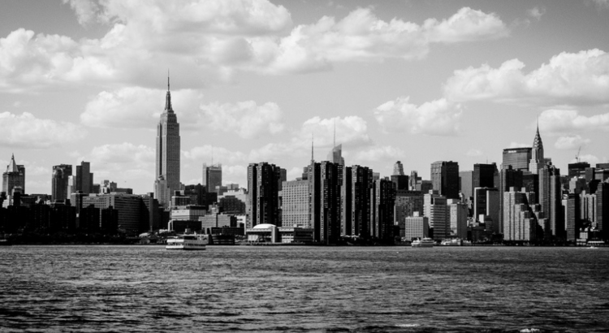

The world best Skyline
The best view from the above, looking out into the sky from the clouds

Nashiville, in North America is definitely the most beautiful skyline on earth. It's just so massive.
There are skyscrapers everywhere.
There are skyscrapers everywhere.
- SINGAPORE - The second most densely populated country on the planet, with over 90% of its population.
- RIO DE JANEIRO, BRAZIL - Blessed with one of the most dramatic natural settings in the world
- CHICAGO, USA - The most famous skyscraper is the 110-story Willis Tower, still commonly referred to as the Sears Tower.
- SYDNEY, AUSTRALIA - Chicago’s most famous skyscraper is the 110-story Willis Tower, still commonly referred to.
- DUBAI, UNITED ARAB EMIRATESEmerging seemingly out of nowhere, Dubai is home to more skyscrapers taller than 250m.
- CHICAGO, USA - The most famous skyscraper is the 110-story Willis Tower, still commonly referred to as the Sears Tower.
- SINGAPORE - The second most densely populated country on the planet, with over 90% of its population living and working.
- SANTO MARIA, BRAZIL - Blessed with one of the most dramatic natural settings in the world, Rio never fails to impress its visitors.
- HARLEM, USA - The most famous skyscraper is the 110-story Willis Tower, still commonly referred to as the Sears Tower.
- PERTH, AUSTRALIA - Perth’s most famous skyscraper is the 110-story Willis Tower, still commonly referred to as the Sears Tower.
- MONACO, UNITED ARAB EMIRATESEmerging seemingly out of nowhere, MONACO is home to more skyscrapers taller than 250m.
- UTAH, USA - The most famous skyscraper is the 110-story Willis Tower, still commonly referred to as the Sears Tower.